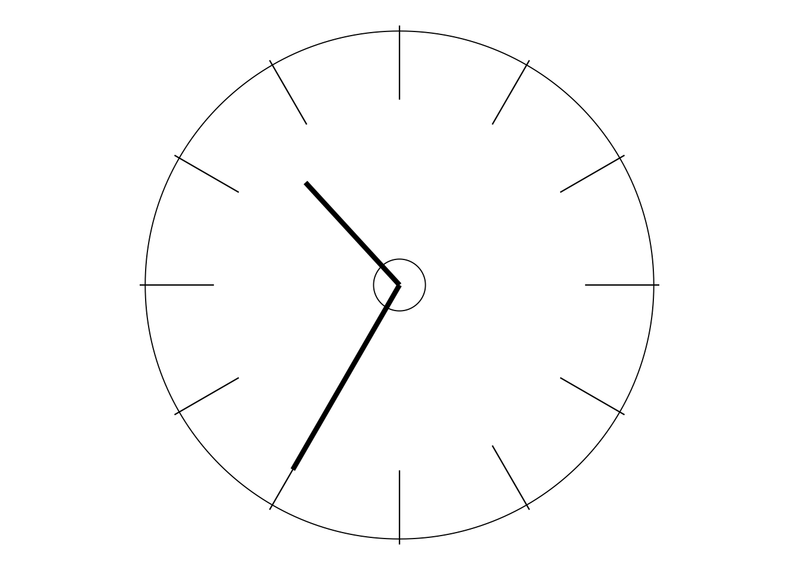

ACTIVITIES, MAJOR ACTIVITIES, PAUSES FOR THOUGHT, PROJECTS AND ‘YOUR ORGANISATION’
As you may already have gathered, in my seminars the delegates did much more than just listen to me! In the same way, in this course I shall ask you to do much more than just read what I am writing. If you prefer only to read then please content yourself with one or more of the books I have just mentioned. But this course is for active learning, and that is quite different from merely reading.
If you have so far not read the “Welcome to 12 Days to Deming” in the “A. PLEASE START HERE” file then please “stop the clock” and do so before continuing here. It contains lots of necessary information and good advice!
So on every Day of this course I shall from time to time ask you to stop and do something—let’s call it a “request for action”. At one extreme the request may simply be for you to spend just a few minutes thinking about something and jotting down a few relevant notes: I’m calling this a “Pause for Thought”. When more time and effort is needed, the requests for action will be called “Activities”. On most days there will also be a “Major Activity”—a term which needs no explanation! And, finally, the course includes those two substantial projects mentioned in the Welcome section, the first taking place during the afternoon of Day 4 and all of Day 5, and the second occupying virtually the whole of Days 10 and 11: these projects replace the need for Major Activities on those days.
On Days 2 and 3, the Major Activities will mainly be matters of time rather than requiring a great deal of deep thought. But, after Day 3, the Major Activities and projects will involve both time and deep thought— generally in increasing amounts as we proceed through the course. But that reflects what would happen in my seminars. During the first day of my most usual three-day seminar I would ask the delegates to contribute very little: they needed time to begin to assimilate the content and style of what they were learning. On the second day there was still plenty for me to do, although now there were increasing amounts of time spent on delegates’ discussions and feedback. But on the third day I only contributed about an hour or so to the proceedings. The morning was mostly taken up by delegate-led sessions on topics such as the three in “The New Climate” (see page 18), to be studied here on Day 8. Often the delegates were preparing these sessions in small groups until late the previous evening: and it was not unknown for me to find the early risers doing further work on them before the final day of the seminar commenced. And then, after my “hour or so”, the afternoon would be spent with us all involved in discussing topics on which the delegates chose to spend a little more time.
Yet again, this pattern is quite well-reflected in what happens during this course. For example, there is often some discussion on the various requests for action either in the main text or in the Appendix. Such discussion is sometimes quite substantial, especially during the first half of the course. In particular, there is a great deal of help for you during the First Project on Days 4 and 5. By the second half of the course, you should be getting well into things and therefore will be more capable of coping on your own. There will still be some help in the Appendix, but generally not as much as previously.
In the Second Project on Days 10 and 11 I shall be introducing you to what I regard as some of Dr Deming’s very best writing—concise but containing a wealth of learning. Here I shall simply ask you to read what he says—sometimes only a single sentence!—and then work on it an item at a time. The better you will have worked on the First Project and many of the other requests for action earlier in the course, the easier you will find that task to be. Following the pattern outlined above, there is still some help for you in the Appendix during the Second Project but not as much as in the First Project since, by then, you should largely be more able to stand on your own two feet! I shall, of course, give you the necessary page references whenever I have included my thoughts in the Appendix. However, except when I suggest otherwise, always do some work first before consulting the Appendix!
All four types of request for action just discussed are clearly signalled in the text. On each day, the Pauses for Thought and Activities are sequentially labelled a, b, c, … and are colour-coded in green or red. The heading is printed in that colour and the corresponding material is enclosed in a similarly-coloured box. Red indicates that I have included some relevant discussion immediately following the request, and so warns you not to look ahead until you are ready. My discussion material is easily identified by being enclosed in a shaded red box. So (whether you are using a printed copy of the Workbook or of the complete material), if that discussion is visible on the same or the next page, it would make sense to cover it up whilst working on the request. Otherwise the discussion will be on the following page, so don’t turn to that page just yet. If the request is colour-coded green then there is no such discussion within the text. There is no need for you to memorise all these conventions right now: I’ll remind you when the time comes. No colour-coding is needed for Major Activities or the Projects as they are headed appropriately.
Finally, particularly on Days 6, 8, 9 and 12, specific reference will be made to “your organisation”. Presumably, many people who work on this course are already (or have been) employed by some company or other type of organisation. If that is your case then, with respect to much of the learning which will develop on those occasions, I’d like you to actively think about what is going on (or went on) in that organisation. Alternatively, if you haven’t yet been employed, but are a student at some college etc, you could possibly think about that educational institution. However, I believe you will learn more if you identify yourself as an employee or a manager rather than as a student. Therefore, if you do not fall naturally into such a role, I’d strongly recommend that you try to find a colleague or other friend who does, and who would be willing to spend some time with you now and again as you work through the course. The relevant requests for action will specifically ask you to consider what is happening in “your organisation” and relate it to what you will be learning here. So, if you are not involved with an organisation in this way, your recruit can then provide you with a “surrogate” organisation to use in your study!